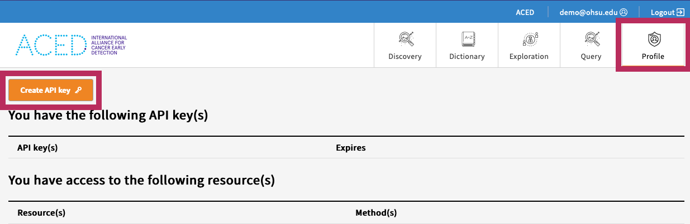
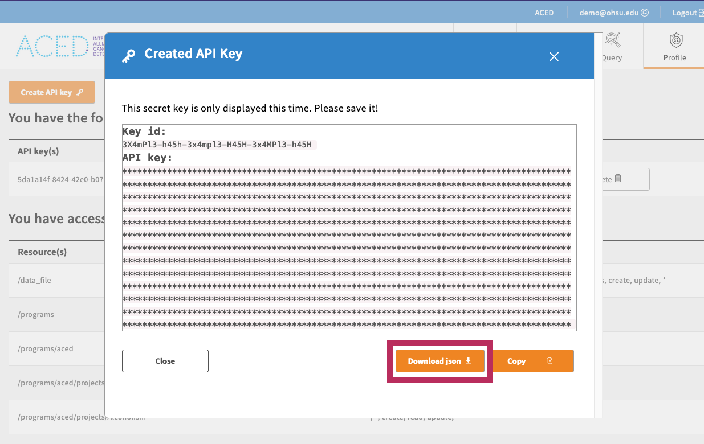

gen3-client
Note
The tools listed here are under development and may be subject to change
Warning
It is important to use the gen3-client from the ACED Github Release Page, as it includes several updates from the "upstream" version including support for the --bucket flag as well as multipart uploads.
Note
This page is adapted from the 'Download and Upload Files Using the Gen3-client' page from the main Gen3 website. This site has a wealth of information that supplements the ACED-IDP project including in-depth examples and usages of the gen3-client.
Downloading gen3-client¶
A binary executable of the latest version of the gen3-client should be downloaded from the following Table or from the Release page on Github. Choose the file that matches your operating system (Windows, Linux, or macOS).
No installation is necessary. Simply download the correct version for your operating system and unzip the archive. The program is then executed from the command-line by running the command gen3-client
| Operating System | Gen3 Client | Checksum |
|---|---|---|
| macOS (Apple Silicon) | gen3-client-macos.zip | checksums.txt |
| macOS (Intel) | gen3-client-macos-intel.zip | checksums.txt |
| Linux (amd64) | gen3-client-linux-amd64.zip | checksums.txt |
| Windows (amd64) | gen3-client-windows-amd64.zip | checksums.txt |
Warning
Do not try to run the program by double-clicking on it. Instead, execute the program from within the shell / terminal / command prompt. The program does not provide a graphical user interface (GUI) at this time; so, commands are sent by typing them into the terminal.
Checksum Verification¶
In order to verify that the downloaded file can be trusted checksums are provided in checksums.txt. See below for examples of how to use this file.
Successful Verification
To verify the integrity of the binaries on macOS run the following command in the same directory as the downloaded file: If the `shasum` command outputs `OK` than the verification was successful and the executable can be trusted.Unsuccessful Verification
Alternatively if the command outputs `FAILED` than the checksum did not match and the binary should not be run. In such a case please reach out to the contributors for assistance.MacOS / Linux Installation Instructions¶
- Download the latest macOS (Apple Silicon or Intel) or Linux version of the gen3-client.
- Unzip the archive.
- Add the unzipped executable to a directory, for example:
~/.gen3/gen3-client - Open a terminal window.
- Add the directory containing the executable to your Path environment variable by entering this command in the terminal:
echo 'export PATH=$PATH:~/.gen3' >> ~/.bash_profile - Run
source ~/.bash_profileor restart your terminal. - Now you can execute the program by opening a terminal window and entering the command
gen3-client
Note
If your macOS does not allow access, you need to manually allow it under System Preferences > Security & Privacy > General (click the lock icon to unlock, enter administrator name and password).
Windows Installation Instructions¶
- Download the Windows version of the gen3-client.
- Unzip the archive.
- Add the unzipped executable to a directory, for example:
C:\Program Files\gen3-client\gen3-client.exe - Open the Start Menu and type "edit environment variables".
- Open the option "Edit the system environment variables".
- In the "System Properties" window that opens up, on the "Advanced" tab, click on the "Environment Variables" button.
- In the box labeled "System Variables", find the "Path" variable and click "Edit".
- In the window that pops up, click "New".
- Type in the full directory path of the executable file, for example:
C:\Program Files\gen3-client - Click "Ok" on all the open windows and restart the command prompt if it is already open by entering cmd into the start menu and hitting enter.
View the Help Menu¶
To check that your copy of the client is working and confirm the version, the tool can be run on the command-line in your terminal or command prompt by entering gen3-client. Typing this alone or gen3-client help will display the help menu. For help on a particular command, enter: gen3-client <command> help.
Note that you must provide the full path of the tool in order for the commands to run, for example, ./gen3-client while working from the directory containing the client. Alternatively, you can add the location of the gen3-client executable to your shell’s PATH environment variable.
Configure a Profile with Credentials¶
Before using the gen3-client to upload or download data, the gen3-client needs to be configured with API credentials downloaded from the Profile page.

Download the access key from the portal and save it in the standard location ~/.gen3/credentials.json

From the command-line, run the gen3-client configure command with the --cred, --apiendpoint, and --profile flags, for example:
gen3-client configure --profile=<profile_name> --cred=<credentials.json> --apiendpoint=https://aced-idp.org
# Mac/Linux:
gen3-client configure --profile=demo --cred=~/Downloads/credentials.json --apiendpoint=https://aced-idp.org
# Windows:
gen3-client configure --profile=demo --cred=C:\Users\demo\Downloads\credentials.json --apiendpoint=https://aced-idp.org
When successfully executed, this will create a configuration file, which contains all the API keys and URLs associated with each commons profile configured, located in the user folder:
# Mac/Linux:
/Users/demo/.gen3/gen3_client_config.ini
# Windows:
C:\Users\demo\.gen3\gen3_client_config.ini
Warning
These keys must be treated like important passwords; never share the contents of the credentials.json and gen3-client gen3_client_config.ini or config file!
To confirm you successfully configured a profile with the correct authorization privileges, you can run the gen3-client auth command, which should list your access privileges for each project in the commons you have access to:
gen3-client auth --profile=aced
# 2023/12/05 15:07:12
# You have access to the following resource(s) at https://aced-idp.org:
# 2023/12/05 15:07:12 /programs/aced/projects/myproject...